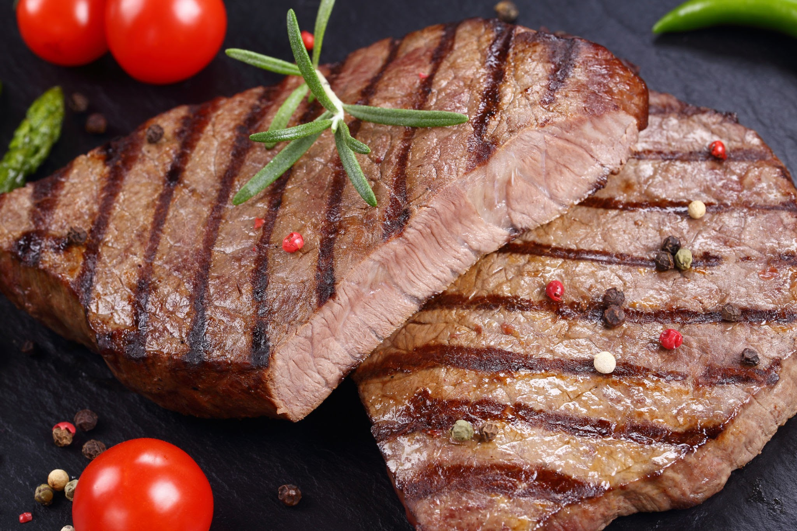

Ingrediente:
-500 ml ulei de măsline
-suc de la 2 lămâi
-usturoi
-o lingură de rozmarin
-1/2 lingură de coriandru
-1/2 ceapă mare
-carne
-sare/piper după gust
1. Amestecăm toate ingredientele foarte bine, apoi scufundăm carnea în aceste amestecăm și o lăsăm la marinat pentru 3-4 ore.
2. Adaugăm vasul cu carne în frigider pentru 3-4 ore, pentru absorbirea perfectă a aromei.
3. Aranjăm carnea pe grătar și o rumenim pe ambele părți.
4. Putem stropi carnea cu puțin vin, pentru a obține o aromă mai intensă.
5. Scoatem carnea de pe foc și o servim cu legume.
Poftă bună, dragii mei! 🤗